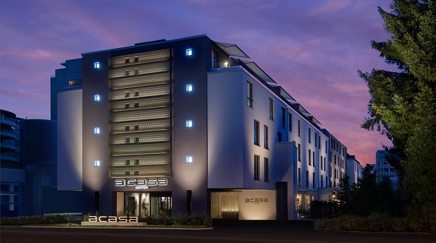
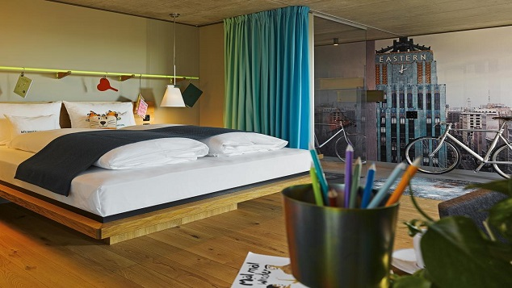
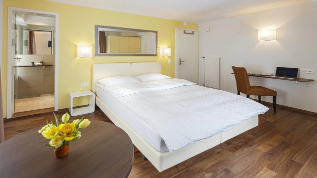
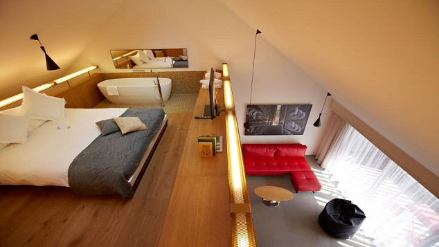

Zürich
Zürich is situated at 408 m (1,339 ft) above sea level on the lower (northern) end of Lake Zürich (Zürichsee)
about 30 kilometers (19 mi) north of the Alps, nestling between the wooded hills on the west and east side.
The Old Town stretches on both sides of the Limmat, which flows from the lake,
running northwards at first and then gradually turning into a curve to the west.
The geographic (and historic) centre of the city is the Lindenhof, a small natural hill on the west bank of the Limmat,
about 700 m (2,300 ft) north of where the river issues from Lake Zürich.
Today the incorporated city stretches somewhat beyond the natural confines of the hills
and includes some districts to the northeast in the Glatt Valley (Glattal) and to the north in the Limmat Valley (Limmattal).
The boundaries of the older city are easy to recognize by the Schanzengraben canal.
This artificial watercourse has been used for the construction of the third fortress in the 17th and 18th centuries.
Zürich has, depending on the definition used, an oceanic climate (Köppen: Cfb), but in the higher areas it is defined as a humid continental climate (Dfb, using 0°C isoterm) with warm summers and four distinct seasons. Decisive for the climate of Zürich are both the winds from westerly directions, which often result in precipitation and, on the other hand, the Bise (east or north-east wind), which is usually associated with high-pressure situations, but cooler weather phases with temperatures lower than the average. The Foehn wind, which plays an important role in the northern alpine valleys also has some impact on Zürich.
The annual mean temperature at the measuring station of the Federal Office of Meteorology and Climatology in Zürich-Fluntern (556 m[1,824 ft] above sea level on the slope of the Zürichberg, 150 m[490 ft] above the level of the city centre) is 9.3 °C (48.7 °F). The lowest monthly mean of daily minimum temperature are measured in January with −2.0 °C (28.4 °F) and the highest monthly mean of daily maximum temperature are measured in July with 24.0 °C (75.2 °F). On average there are 74.9 days in which the minimum temperature is below 0 °C (32 °F) (so-called frost days), and 23.7 days in which the maximum temperature is below 0 °C (32 °F) (so-called ice days). There are on average of 30 so-called summer days (maximum temperature equal to or above 25 °C [77 °F]) throughout the year, while so-called heat days (with maximum temperature equal to or above 30 °C [86 °F]) are 5.8 days. The average high temperature in July is 24.0 °C (75.2 °F) and average low temperature is 14 °C (57.2 °F). The highest recorded temperature in Zürich was 37.7 °C (100 °F), recorded on July 1947, and typically the warmest day reaches an average of 32.2 °C (90.0 °F).
5 of the best hotels in Zürich
(WORLD TELESCOPE) — In Zürich, you're never stuck for something to do, see, eat or drink--
no matter what time of the night or day it is.
But even the most energetic travelers need somewhere to take a breather.
In a destination packed with more hotels than you could visit in a lifetime, finding the best isn't easy.
But these five are among the best the city has to offer when you stay here:
1. ACASA Suits

Located in Zürich, a 3-minute walk away from
Oerlikon Train Station and 900 metres from Messe Zurich,
ACASA Suites provides accommodation
with a fitness centre and private parking.
The room is super clean and the bed is very comfortable.
The hotel staff are exceptional friendly
and helpful compared to other European hotels.
The hotel is just 5 minutes from the airport
and a few minutes to downtown by train.
The Nespresso coffee machine is very good
and easy to use with complimentary coffee capsules.
They have the necessary utensils in
the cupboard for you to prepare your meal.
The hotel is more than one can expect in Zurich
with such price and the excellent services from the hotel staff.
2. 25hours Hotel Langstrasse

Offering a sauna and fitness centre,
25hours Hotel Langstrasse is set in the 4.
Aussersihl district in Zürich,
in the direct vicinity of the main train station.
Guests can enjoy the on-site...
Lovely hotel in the Tribeka district.
Young, vibrant atmosphere in a great location.
Very friendly staff - even received a free upgrade!
Excellent amenities...Great bar.
3. Aparthotel Familie Hugenschmidt

The family-run Aparthotel Familie Hugenschmidt
is located in the charming Seefeld quarter of Zürich,
just a 3-minute walk from the green banks of Lake Zürich
and a 5-minute tram ride from the centre.
Very clean and nice room. Perfect for a business trip.
4. Atlantis by Giardino

Urban and close to nature,
set at the foot of the Uetliberg Mountain in Zurich,
Atlantis by Giardino opened in December 2015
and provides exclusive rooms and suites with contemporary design,
as well... I liked everything in tue hotel with no exceptional
5. B2 Boutique Hotel + Spa

Next to Zurich’s centre,
B2 Boutique Hotel + Spa provides stylish,
air-conditioned rooms in a former brewery.
It was an outstanding hotel with great location,
beautiful and refined facilities,
fabulous service and very comfortable rooms.
I wouldnt stay in any other hotel next time in Zurich.